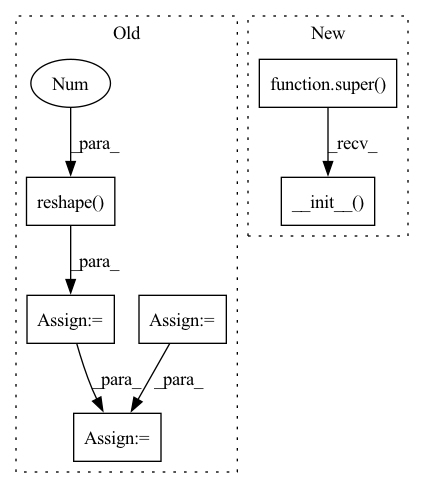

Pattern ID :25937

Before Change
self.length = len(self.image_paths)
self.i2v_encoder = LabelEncoder()
self.year_encoder = LabelEncoder()
i2v_labels = np.array(i2v_labels).reshape(-1, 1)
year_labels = np.array(year_labels).reshape(-1, 1)
self.i2v_labels = self.i2v_encoder.fit_transform(i2v_labels)
self.year_labels = self.year_encoder.fit_transform(year_labels)
self.transform = transforms.Compose([
transforms.Resize((image_size, image_size)),
After Change
def __init__(self, image_size, transform=None):
if transform is None:
transform = make_default_transform(image_size)
super().__init__(transform)
def _load(self):
dataset_file_path = "/usr/src/data/animefacedataset/labels.csv"
with open(dataset_file_path, "r", encoding="utf-8") as fin:
In pattern: SUPERPATTERN
Frequency: 3
Non-data size: 6
Instances
Fragment ID: 78345642
Project Name: stomoya/animeface
Commit Name: 21e86e8dc2d49667e6edb8863004a229eeb6798a
Time: 2021-02-20
Author: blackie0110@gmail.com
File Name: implementations/general/anime_face.py
M Class Name: LabeledAnimeFaceDataset
N Class Name: LabeledAnimeFaceDataset
M Method Name: __init__(3)
N Method Name: __init__(2)
M Parent Class: ImageLabel
N Parent Class: Dataset
M File Name: implementations/general/anime_face.py
N File Name: implementations/general/anime_face.py
M Start Line: 107
M End Line: 122
N Start Line: 56
N End Line: 59
'>
Before Change
grid_x = self._cached_grids[0]
grid_y = self._cached_grids[1]
grids = self.generate_grids(grid_y, grid_x,
device=self._device, dtype=self._dtype).unsqueeze(0).repeat(num_anchors,1,1,1)
wh = torch.repeat_interleave(self._anchors, grid_y*grid_x, dim=0).reshape(num_anchors, grid_y, grid_x, 2)
prior_boxes = torch.cat([grids, wh], dim=-1)
prior_boxes[:, :, :, :2] += .5 // adjust to center
prior_boxes *= self._stride
self._prior_boxes = cxcywh2xyxy(prior_boxes.reshape(-1,4)).reshape(num_anchors, grid_y, grid_x, 4)
After Change
class Anchor(nn.Module):
def __init__(self, anchors: List, img_size: int, stride: int):
super().__init__()
// anchors: between 0 < ? < 1
// pylint: disable=not-callable
self.anchor_sizes = (torch.tensor(anchors) * img_size) / stride // between 0 < ? < max_grid
self.stride = stride
'>
Fragment ID: 78345647
Project Name: borhanmorphy/fastface
Commit Name: 90145f768cd9599edb0618b3faf3a69310ff82f8
Time: 2021-03-12
Author: borhano.f.42@gmail.com
File Name: fastface/arch/yolov4/anchor.py
M Class Name: Anchor
N Class Name: Anchor
M Method Name: __init__(4)
N Method Name: __init__(4)
M Parent Class: nn.Module
N Parent Class:
M File Name: fastface/arch/yolov4/anchor.py
N File Name: fastface/arch/yolov4/anchor.py
M Start Line: 10
M End Line: 30
N Start Line: 12
N End Line: 19
'>
Before Change
// one-hot encode label info
// encoders are class attr for inverse transform
self.i2v_onehot_encoder = OneHotEncoder()
self.year_onehot_encoder = OneHotEncoder()
i2v_labels = np.array(i2v_labels).reshape(-1, 1)
year_labels = np.array(year_labels).reshape(-1, 1)
self.i2v_labels = self.i2v_onehot_encoder.fit_transform(i2v_labels).toarray()
self.year_labels = self.year_onehot_encoder.fit_transform(year_labels).toarray()
self.transform = transforms.Compose([
After Change
def __init__(self, image_size, transform=None):
if transform is None:
transform = make_default_transform(image_size)
super().__init__(transform)
def _load(self):
dataset_file_path = "/usr/src/data/animefacedataset/labels.csv"
with open(dataset_file_path, "r", encoding="utf-8") as fin:
'>
Fragment ID: 78345603
Project Name: stomoya/animeface
Commit Name: 21e86e8dc2d49667e6edb8863004a229eeb6798a
Time: 2021-02-20
Author: blackie0110@gmail.com
File Name: implementations/general/anime_face.py
M Class Name: OneHotLabeledAnimeFaceDataset
N Class Name: OneHotLabeledAnimeFaceDataset
M Method Name: __init__(3)
N Method Name: __init__(2)
M Parent Class: ImageOnehot
N Parent Class: Dataset
M File Name: implementations/general/anime_face.py
N File Name: implementations/general/anime_face.py
M Start Line: 162
M End Line: 179
N Start Line: 79
N End Line: 82